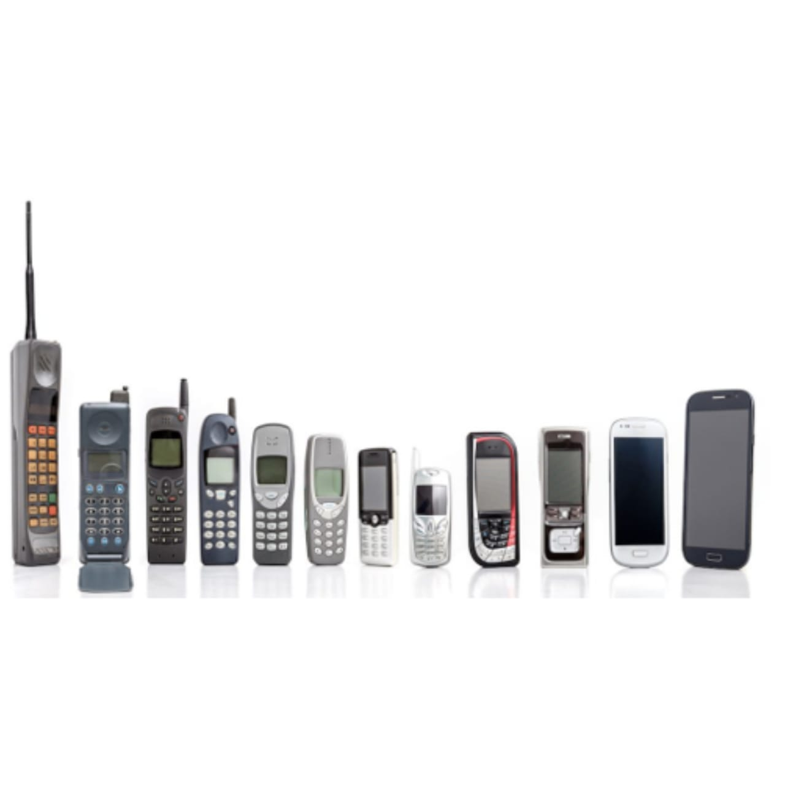
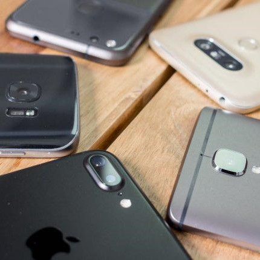

Left
Pengenalan Telepon Genggam
Middle
Telepon genggam atau telepon seluler atau handphone adalah perangkat telekomunikasi elektronik yang mempunyai kemampuan dasar yang sama dengan telepon konvensional saluran tetap, tetapi dapat dibawa ke mana-mana (portable atau mobile) dan tidak perlu disambungkan dengan jaringan telepon menggunakan kabel (jadi komunikasi nirkabel, wireless communication). Saat ini, Indonesia mempunyai dua jaringan telepon nirkabel yaitu sistem GSM (Global System for Mobile Telecommunications) dan sistem CDMA (Code Division Multiple Access). Badan yang mengatur telekomunikasi seluler Indonesia adalah Asosiasi Telekomunikasi Seluler Indonesia (ATSI).

Penemu telepon genggam yang pertama adalah Martin Cooper, pada tanggal 03 April 1973.Cooper bersama timnya menghadapi tantangan bagaimana memasukkan semua material elektronik ke dalam alat yang berukuran kecil tersebut untuk pertama kalinya. Namun akhirnya sebuah telepon genggam pertama berhasil diselesaikan dengan total bobot seberat dua kilogram. Setelah berhasil memproduksi telepon genggam, tantangan terbesar berikutnya adalah mengadaptasi infrastruktur untuk mendukung sistem komunikasi telepon genggam tersebut dengan menciptakan sistem jaringan yang hanya membutuhkan 3 MHz spektrum, setara dengan lima channel TV yang tersalur ke seluruh dunia.

Right
Fungsi telepon genggam adalah untuk melakukan dan menerima panggilan telepon, juga mempunyai fungsi pengiriman dan penerimaan pesan singkat (short message service, SMS). Ada pula di beberapa negara yang menyediakan layanan generasi ketiga (3G) dengan menambahkan jasa videophone, sebagai alat pembayaran, atau untuk televisi online di telepon genggam mereka. Sekarang, telepon genggam menjadi gadget yang multifungsi. Mengikuti perkembangan teknologi digital, kini telepon genggam dilengkapi dengan berbagai pilihan fitur, seperti bisa menangkap siaran radio dan televisi, perangkat lunak pemutar audio (MP3) dan video, kamera digital, game, dan layanan internet (WAP, GPRS, 3G, 4G). Selain fitur-fitur tersebut, telepon genggam sekarang sudah ditanamkan fitur komputer.
Artikel responsif Lain